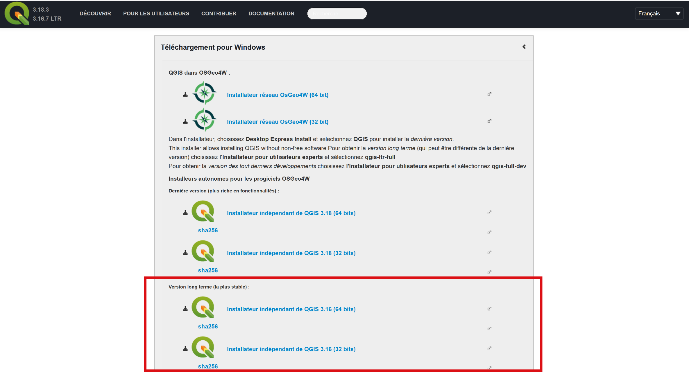
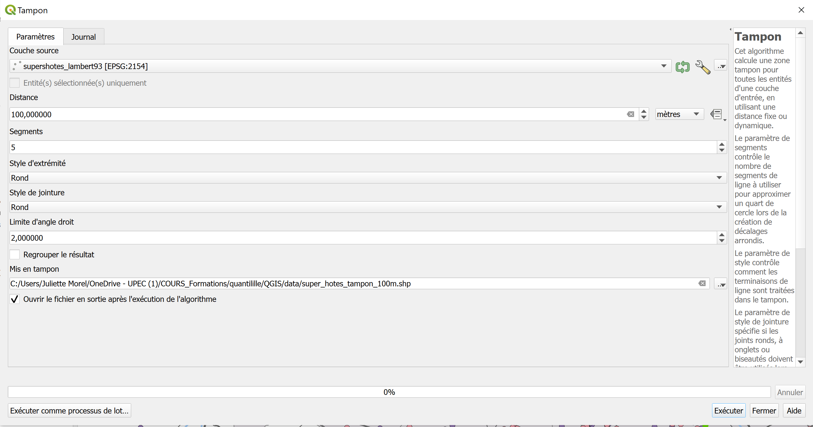
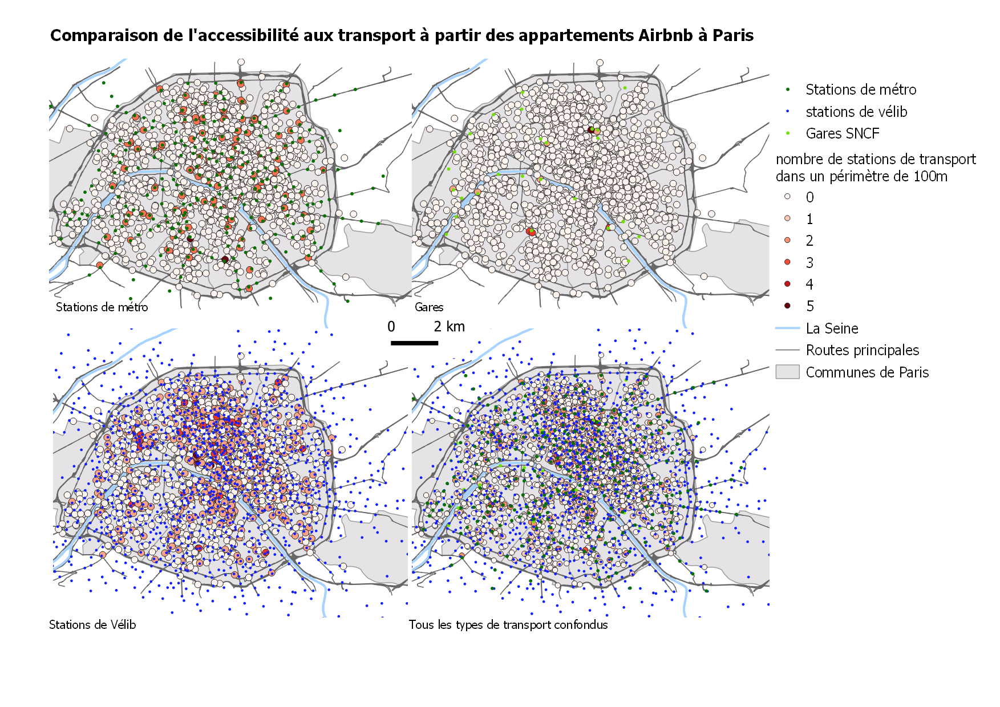

Ouvrir la table attributaire > selectionner les entités en utilisant une expression > paramètres : comme ci-dessous 
Tous ces exercices ont pour fonction la prise en main du logiciel de SIG Libre Quantum GIS (QGIS), version 3.16(.7). Lien vers le téléchargement de QGIS : https://qgis.org/fr/site/forusers/download.html : Choisir “Installeurs autonomes pour les progiciels OSGeo4W” (Windows) ou “Paquetages officiels authentifiés tout-en-un” (Mac), puis Version long terme (la plus stable). 
Vous trouverez un manuel pour l’utilisation de QGIS 3.16 avec le détail de toutes les fonctions offertes par le logiciel à ce lien : https://docs.qgis.org/3.16/fr/docs/user_manual/index.html Il pourra vous servir de référent si vous rencontrez des problèmes lors de ce TP.
Conseil : normalement tout est expliqué dans le TP, à chaque étape, pas à pas. Pour faciliter la pratique de ce TP, nous vous conseillons de lire d’abord toute l’étape pour comprendre son objectif global, puis de relire progressivement sous-étape par sous-étape en les réalisant pas à pas.
Nous allons réutiliser les données sur les appartements AirBnB à Paris. Lien pour télécharger les données : <data.zip> Extraire le fichier compressé téléchargé et placer les données dans un nouveau dossier consacré à cet exercice. Attention ! Nous allons créer de nombreuses fihciers pendant ce TP. Afin que leur création et leur utilisation se passent le mieux possible, merci de respecter les règles suivantes : Créer un dossier dans lequel vous allez bien enregistrer toutes les nouvelles couches de données avec des noms compréhensibles (éviter les “toto”, “tata”, on ne s’y retrouve vite plus). * Dans le nom des fichiers, éviter les espaces (vous pouvez par exemple les remplacer par des _ [tiret du 8]) et les caractères spéciaux. *
Ouvrir Qgis. Créer un nouveau projet QGIS. Enregistrer le projet sous le nom Airbnb_exo2.qgz (Barre de menu supérieure > Projet > enregistrer sous). Pensez à enregistrer régulièrement le projet pendant l’exercice afin de ne pas perdre vos manipulations et réglages si le logiciel plante.
Nous allons opérer à une comparaison de l’accessibilité des appartements AirBnB par rapport aux gares, aux stations de métro et aux sation de velib à Paris. Avant de commencer l’exercice, nous allons réfléchir tous ensemble aux étapes à mettre en place pour cela avec les données dont nous disposons.
Charger dans le nouveau projet QGIS, les couches : * Com_75.shp : les communes composant Paris * IRIS_75.shp : Les IRIS découpant les communes de Paris * superhotes.shp : les appartements super hôtes sur Airbnb créée à l’exercice précédent. * Roads.shp : Routes principales pour l’habillage. * gare_paris.shp : Gares sncf dans Paris pour l’habillage.
Via QuickOSM : * stations de métro : Paramêtres : clé = railway / value = stations / emprise = “emprise d’une couche” = “comm75” afin de récupérer les stations de métro au sein de l’emprise de la couche Paris.
Via le téléchargement de données sur internet puis intégration de données par le gestionnaire des sources de couches de données : * localisation des stations velib à Paris : https://opendata.paris.fr/explore/dataset/velib-emplacement-des-stations/export/
Régler la symbologie et l’ordre des nouvelles couches pour que les différents éléments de la carte soient lisibles (voir étape 1.2.).
Dans la couche railway_station, il y a beaucoup de “bruits”, beaucoup d’éléments qui ne correspondent pas à des station de métro (cf. autour de la gare de Lyon). Nous allons donc nettoyer les données en ne gardant que les stations de métro : Ouvrir la table attributaire > selectionner les entités en utilisant une expression > paramètres : comme ci-dessous
Nous allons également sélectionner uniquement les stations de vélib qui se trouvent à l’intérieur de Paris. Pour cela, nous allons utiliser la section spatiale, qui permet de sélectionner des entités d’une couche selon ses relations spatiales qu’elles entretiennent avec les entités d’une autre couche : Vecteur > Outils de recherche > Selection par localisation > Paramètres : "selectionner les entités depuis" = la couche contenant les stations vélib / "prédicat géométrique" : "est à l'intérieur de" /"en comparant les les entiotés de" = la couche avec les communes parisiennes / laisser "créer une nouvelle sélection" Exporter et enregistrer une nouvelle couche ne contenant que ces stations velib en l’appelant “velib_paris.shp”.
Créer une couche regroupant toutes les infrastructures de transport : stations de Velib, métro et gares :
Vecteur > Outils de gestion de données > fusionner des couches vecteur > Paramètres : selectionner les 3 couches de points de transports pour les fusionner / créer un fichier dans le dossier dans lequel se trouvent toutes les autres données et le nommer "infrastructures_transport.shp"
Vous devez réserver un appartement sur Airbnb, où aller avec un.e ami.e qui a la jambe cassée. Il.elle ne peut marcher qu’une centaine de mètres, vous voulez donc sélectionner un appartement qui se trouve proche d’une station de métro, d’une station de vélib et/ou d’une gare. Nous allons donc comparer l’accessibilité des appartements supers hôtes selon ces différents modes de transport (vélib, métro, train), puis en fusionnant tous ces modes de transport. Pour cela on peut imaginer 2 méthodes :
La première méthode consiste à représenter la distance entre chaque appartement et la station de transport la plus proche.
2.4.1.1. On peut représenter la distance entre les appartements et les infrastructures de transport proches grâce au résultat d’une matrice des distances. Une matrice des distances permet de calculer les distances entre différents points, or nous voulons calculer la distance entre chaque appartement et son infrastructure de transport la plus proche. On va donc créer une matrice des distances, avec un degré 1 de proximité pour ne sélectionner que les sinfrastructures les plus proches (le degré 2 calcule les distances avec les deux stations les plus proches, etc ; le degré 0 calcule les distances avec toutes les stations). Nous allons commencer avec les stations de métro : Vecteur > Outils d'analyse > Matrice des distance > Paramètres : voir la capture ci-dessous 
Ouvrir la table attributaire de la couche créée pour constater les informations créées et que tout s’est bien passé.
Faire des matrices de distances selon ce même paramétrage pour calculer tour à tour la distance entre les appartements et les stations de vélib, les gares et toutes les infrastructures de transport (couche réalisée à la fin de l’étape 2.3).
2.4.1.2. Une fois que toutes ces distances sont calculées, vous voulez soumettre à votre ami.e les résultats de votre étude pour choisir l’appartement.Vous voulez donc visualiser globalement sur une carte la localisation des appartements très accessibles et ceux qui le sont moins, selon les modes de transport.
2.4.1.2.1. Réglage de la symbologie : choisissez 1 couche avec les distances, celle qui vous semble la plus appropriée (vélib, métro, gare ou tout confondu), pour représenter par plage de valeurs (symboles gradués, plus ou moins clair ou foncé) la distance entre chaque appartement et l’infrastructure de transport choisie la plus proche.
2.4.1.2.2. Ensuite, on peut produire un document qui permettra de montrer le résultat à votre ami.e, en utilisant l’outil de mise en page (anciennement composeur d’impression), en suivant les explications ci-dessous. Il faut donc que dans l’interface principale, soit cochée et au dessus des autres (éventuellement décochées) la couche choisie. Projet > nouvelle mise en page > Donner un noim à votre composition, par exemple "accessibilite_methode1" > Paramètres : voir la capture d'écran ci-dessous 

La deuxième méthode consiste à représenter la densité des infrastructures de transport à proximité des appartements.
2.4.2.1.Nous allons dans un premier temps définir la distance qu’on estime être proche pour votre ami.e à la jambe cassée : 100m / 500m ? Pour ensuite créer des zones tampon (buffer) de cette distance autour des appartements.
2.4.2.1.1. Pour cela, il va falloir d’abord reprojeter la couche des supers hôtes en Lambert93, car elle est à l’origine en WGS84, car elle vient d’une application étatsunienne utilisant le GPS et les cartes web paramétrés dans ce système de coordonnées. Or en WGS84 l’unité de mesure sont les degrés, et nous voudrions pouvoir créer la zone tampon selon une distance métrique. C’est pourquoi nous allons passer à une projection en Lambert93 dont les unités sont les mètres. Vecteur > outils de gestion des couches > reprojeter une couche > Paramètres : couche source = "superhotes" / SCR cible = "EPSG 2154 - RGF93 / Lambert93" / enregistrer vers un fichier = superhosts_lambert93 dans le dossier courant.
2.4.2.1.2. On va pouvoir ensuite créer les zones tampons à partir de cette nouvelle couche en Lambert93 : Vecteur > outils de géotraitement > Tampon > Paramètres : voir la capture d'écran ci-dessous 
2.4.2.2. Dans un nouveau fichier shapefile pour chaque mode de trasport, compter les stations de métro, les stations de vélib, les gares, et toutes les infrastructures de transport dans les zones tampons, avec l’outil compter des points dans les polygones (déjà utiliser dans l’exercice 1, etape 1.4.).
2.4.2.3. Il faut maintenant reporter ces comptes sur les points des appartements, en utilisant la jointure attributaire pour qu’on puisse ensuite représenter cette densité au point de l’appartement et non à la zone tampon. Le principe d’une jointure attributaire est d’associer les attributs des entités d’une couche (ici la couche des zones tampons) aux entités d’une autre couche (ici la couche des zupers hôtes), à condition que les unes et les autres possèdent un champ attributaire commun qui les fasse correspondre. En l’occurrence ici, comme les zones tampon ont été créées à partir des appartements supers hôtes, les unes et les autres ont les mêmes identifiants (attribut “id” dans les deux tables attributaires) : Clic droit sur la chouche des appartements dans la fenêtre de gestion des couches > Propriétés > Jointures > + > Paramètres : voir la capture ci-dessous 
Reproduire cette opération de jointure pour les comptes de chacun des quatre types de transport considérés à l’étape 2.4.2.3.
A la fin de ces opérations de jointure, il faut exporter / enregistrer sous forme d’une nouvelle couche les appartements supers hôtes, pour enregistrer les jointures, car celles-ci ne sont pas faites en dur, mais seulement de manière temporaire. Si vous n’exporter pas vers une nouvelle couche, vous perderez ces jointures la prochaine fois que vous ouvrirez le projet ou si vous ouvrez la couche super hôtes dans un autre projet.
2.4.2.4. Visualisation Nous allons maintenant faire des cartes de densité pour montrer s’il y a beaucoup d’infrastructures de transport à côté de chaque appartement ou pas.
Réglage de la Symbologie : à partir de la couche des supers hôtes exportée avec les quatre nouveaux champs comptant les stations de transport réalisée à l’étape 2.4.2.3., réglez la symbologie pour rendre compte de la densité du type d’infrastructure de transport par des variations de valeur (symbologie catégorisée car il n’y a pas de modalités supérieures à 4 et que ce sont des mesures discrètes). Pour vous aider dans cette tâche, sachez qu’il est possible de dupliquer cette couche dans la fenêtre de gestion des couches et de la renommer, en faisant clic droit sur la couche > dupliquer et/ou renommer. Vous pouvez ainsi : * dupliquer la couche avec les informations que vous venez de joindre pour avoir 4 fois la même couche, * régler la symbologie de chacune de ces 4 couches sur un mode de transport différent, * et renommer chaque couche pour que le mode de transport représenté soit explicite.
Ensuite, on peut produire un document qui permettra de montrer le résultat à votre ami.e, en utilisant l’outil de mise en page (anciennement composeur d’impression). Nous voulons sur ce document juxtaposer les unes à côté des autres quatre cartes rendant chacune compte d’un mode de transport. Projet > nouvelle mise en page > Donner un noim à votre composition, par exemple "accessibilite_methode1" > Paramètres : voir la capture d'écran ci-dessous 
Au final, l’idée est d’arriver à une mise en page du type de celle ci-dessous: 
Une fois cet exercice terminé, vous pouvez continuer la prise en main de QGIS avec l’exercice 3 qui se fera à partir des mêmes données